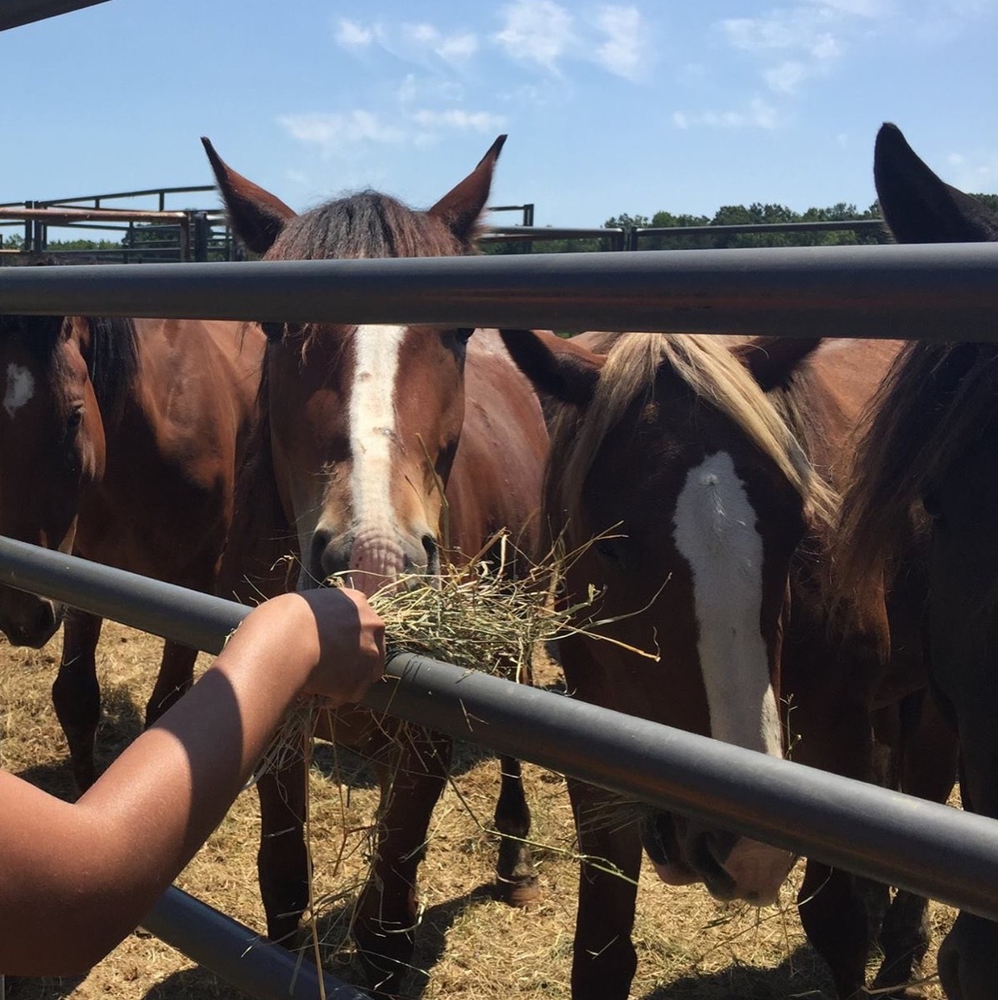
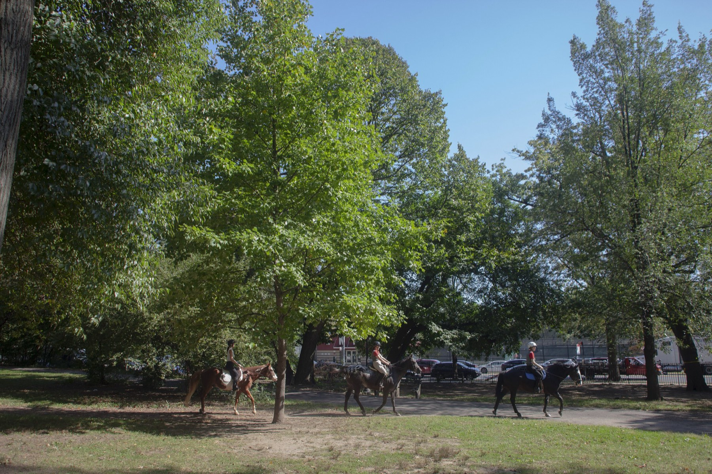
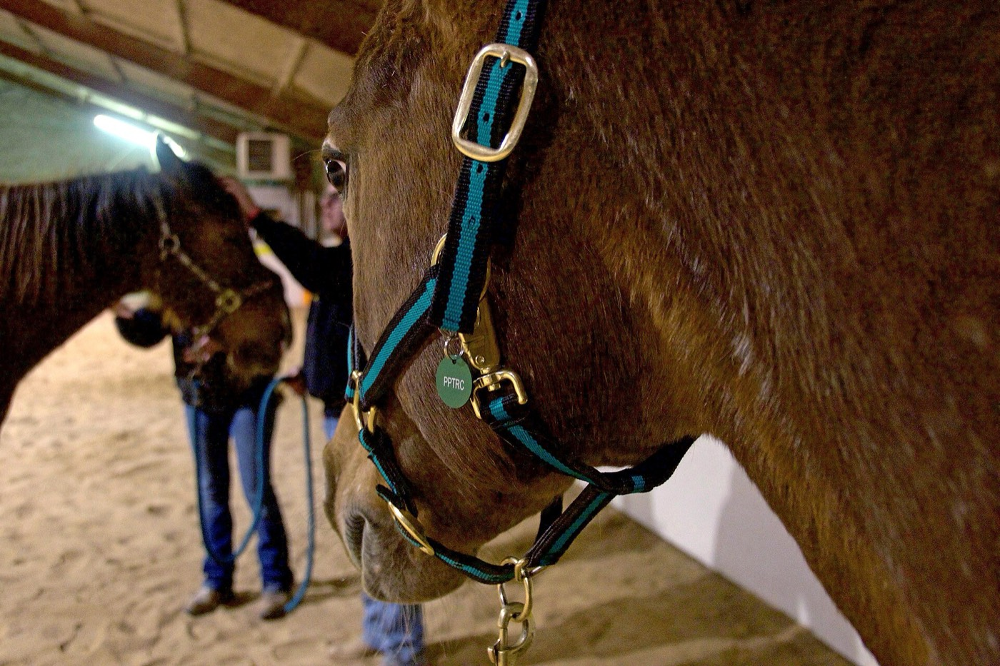
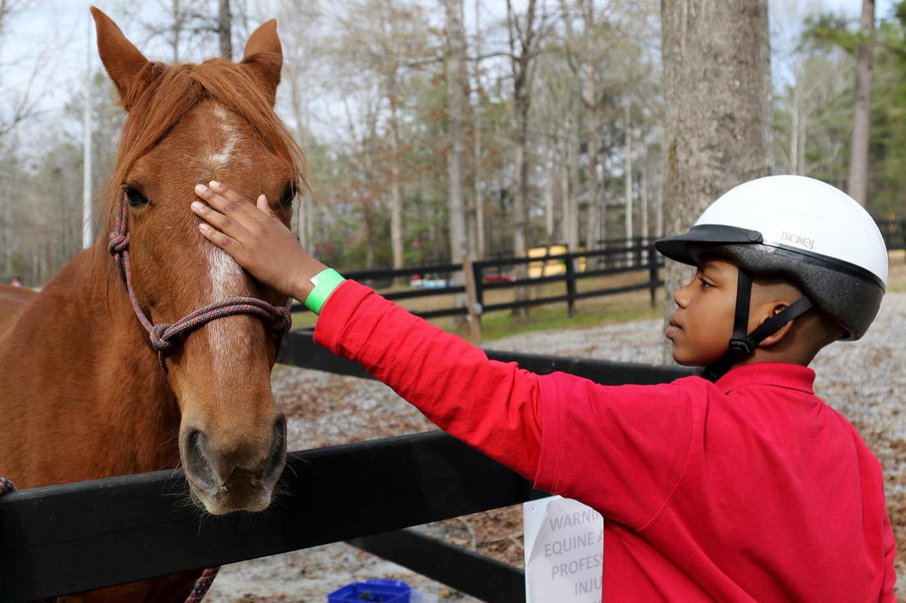
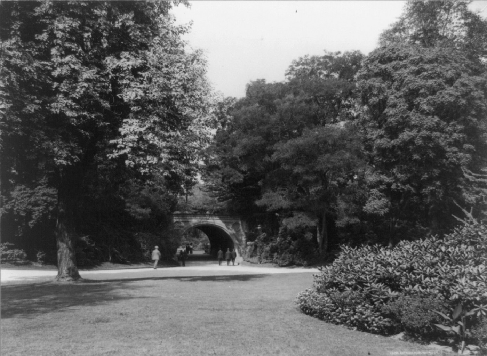

Second-career horses
Giving horses whose first careers didn’t work out a new start in “healthy, nurturing, loving environments.”
Second careers for horses, and a way into riding for Brooklynites of every background and ability.

The Helping Hoof Initiative is a community program for horses and people. It is carried out by Helping Hoof, Inc., a 501(c)(3) nonprofit, alongside Be•Brooklyn Equine at Prospect Park Stable. The mission has four parts.

Giving horses whose first careers didn’t work out a new start in “healthy, nurturing, loving environments.”

Promoting equine-assisted therapy and assisted learning.

Making riding accessible to people “with physical, emotional, social, or economic challenges.”

Promoting public infrastructure that lets urban horses live and thrive, safely for horses and people alike.
Mission as published by Helping Hoof (6sqft, 2023).